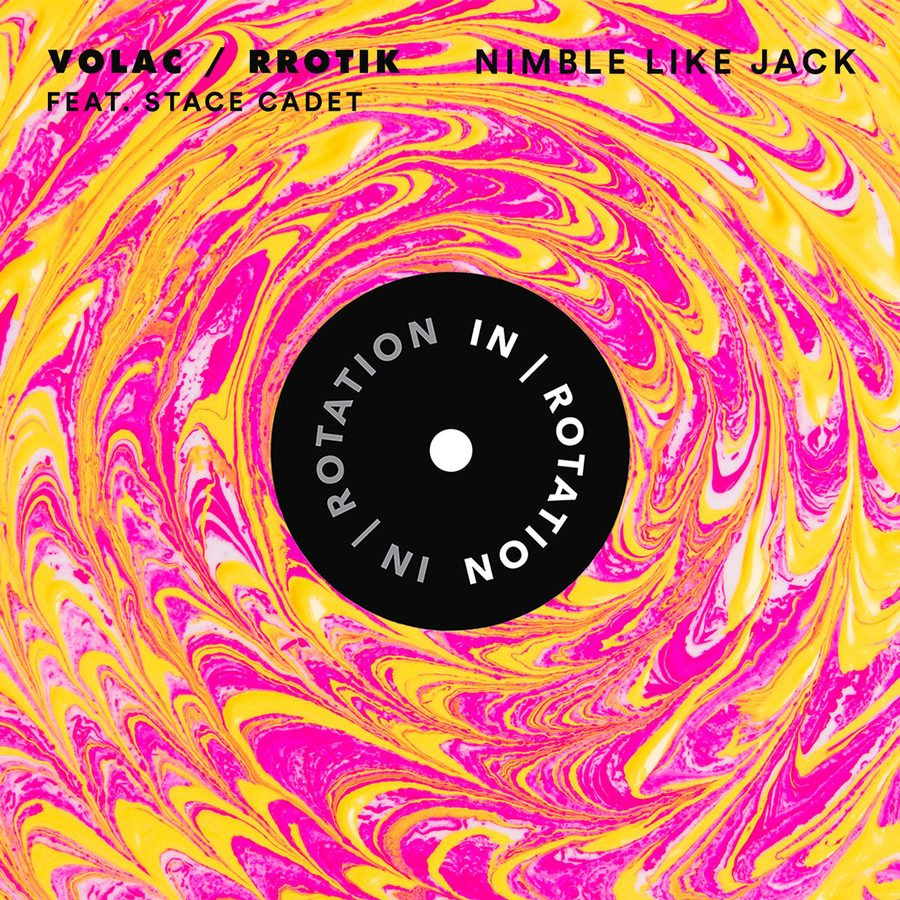

Volac and rrotik Create a Brazil-Russia Alliance on Slamming House Collab “Nimble Like Jack” for IN / ROTATION


Brazilian bass specialist rrotik showed up in our Metronome series, in which his music was described as “slamming house music infused with the bassiest possible flavors.” Evidence suggests the magic ingredient that unites the Brazilian underground scene is indeed bass itself.
One particular act seduced by the Brazilian sound is Russian duo Volac, who fell in love with the country’s gritty, groovy sound. You’ll find the local flavors all over Volac’s music. And the latest IN / ROTATION release, “Nimble Like Jack,” actually sees both acts teaming up for a slamming collaboration, with the extra ingredient of Stace Cadet on vocals.
There are copious amounts of bass to be had here, as well as an interesting story as to how the partnership came together. So, we decided to chase both acts down for a Q&A.
How is 2018 starting out for you guys?
Volac: 2018 started very well. We’ve already released our Russian Style EP on Night Bass. We got so many supports from DJs and producers. It’s big points for us. Also, we’ve already played on Holy Ship! festival this year. It was one of the greatest festivals we have ever been to. We met so many cool people and artists there. It’s definitely an amazing start to the year.
rrotik: 2018 started in full activity. Played Universo Paralello festival on NYE and then Holy Ship! 10.0, which was absolutely mental; my first international tour to Australia and New Zealand; a remix out; and now, the release of “Nimble Like Jack.”
The uniting theme for you guys is Brazil. Volac earned an impressive following there, while rrotik comes from there. What does the Brazilian scene mean to all of you?
V: It’s a good question. Brazil is like a second home. In the beginning of our career, we developed there. We learned how to play music and feel crowds on big dancefloors. Also, we learned how to create cool content (photos, videos, fun Instagram stories). We can talk of it endlessly.
R: The Brazilian crowd has a certain way that not so many international DJs are able to crack, so I give it to Volac for doing it with such mastery. It’s definitely helping me gather more listeners in my own country! I’ve been a bit more UK-oriented, though, which I believe to be a more universal vibe. Takes a while, but it’s all falling into place now!
Tell us what the word “bass” means to you.
V: You have to ask rrotik about that, because he has a “bass” tattoo on his arm.
R: Bass is how it all started for me. It all evolved from learning to play a [Red Hot] Chili Peppers song on bass guitar when I was 15 years old, [and it] is still my main instrument. You can find me jamming tunes on Instagram from time to time when I’m in the studio back home.
What brought you guys together, and what’s the story behind this track?
V: We made the main idea and then sent it to rrotik to add some cool bass stuff. Two weeks later, we went on tour in Australia, where we played a show in Melbourne. Then, we remembered that Stace Cadet lives there. We went to his studio and recorded his vocal. It was a great experience to work with him. He is very talented!
R: I’ve always been a big listener and spinner of Volac, because they work so well up here. They have always been supportive of my stuff, as well, so [it’s] natural that our music collides. Volac reached out to me asking if I could add some cool sounds to this already dope idea they sent over, and I was like, “Uh… OF COURSE?” Later, Stace Cadet jumped on the wagon (he had vocals on another remix I’ve done for Airwolf’s “Talking Bass”), and here we are.
How did the hookup with IN / ROTATION happen?
V: IN / ROTATION always releases cool and interesting stuff. That’s why we loved to release our track there. We were so happy to hear they wanted to sign “Nimble Like Jack.”
R: IN / ROTATION has been putting out some sick stuff from my peers, like J.Worra, Londonbridge & Lliam Taylor, and Wongo; it’s more than an honor to be among these.
What’s up next for the Volac and rrotik posse?
V: Right now, we are touring North America. We play this track every show, and people are totally enjoying that… Also, we are doing an Australia/US tour in May. Maybe we will try to make something new with Stace Cadet in Australia, haha. Also, we are playing EDC Las Vegas this year. It’s definitely next-level in our career. Every two months, we are gonna release some new music, because we have a lot of stuff to show you.
R: For Volac and rrotik, we have another collab in the works, and it’s just as mad as “Nimble Like Jack.” I’ve also been working on music with the likes of Shift K3Y, Uniiqu3, Wongo, Chris Bushnell, and Hood Rich, so yeah—2018 looks so bright, you gotta squint!
Follow Volac on Facebook | Twitter | SoundCloud
Follow rrotik on Facebook | Twitter | SoundCloud
Follow IN / ROTATION on Facebook | Twitter | SoundCloud